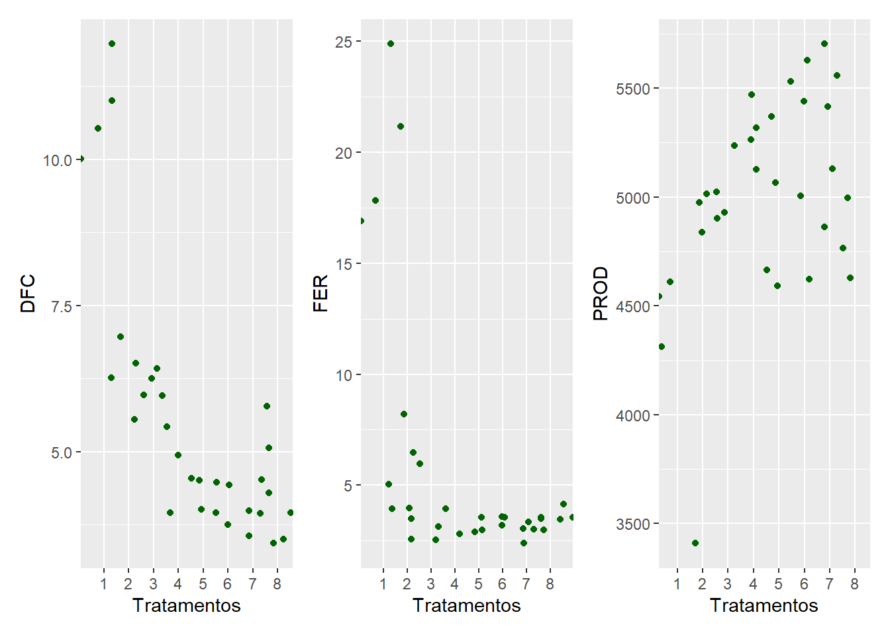

library(gsheet) # Importar banco de dados
library(tidyverse) # Manipulação de dados
library(patchwork) # Organização de gráficos
library(performance) # Teste premissas
library(emmeans) # Comparações multiplas
library(multcomp)
library(knitr) #Tabelas
library(epifitter) # Para calcular a AACPDAula 8
Pacotes
Pacotes utilizados no decorrer do código.
Banco de dados
Os dados são referentes a um ensaio realizado em DBC, com 8 tratamento e 4 repetições. Dados de severidade de doenças de final de ciclo (DFC) e ferrugem (FER) foram mensuradas, assim como a produtividade.
dados <- gsheet2tbl("https://docs.google.com/spreadsheets/d/1bq2N19DcZdtax2fQW9OHSGMR0X2__Z9T/edit#gid=866852711")
dados <- dados |>
mutate(TRAT = as.factor(TRAT),
BLOCO = as.factor(BLOCO))Visualizando
Gráfico de dispersão de cada variável.
dfc <- dados |>
ggplot(aes(x = TRAT, y = DFC)) +
geom_jitter(width = 1, color = 'darkgreen') +
labs(x = 'Tratamentos')
fer <- dados |>
ggplot(aes(x = TRAT, y = FER)) +
geom_jitter(width = 1, color = 'darkgreen') +
labs(x = 'Tratamentos')
prod <- dados |>
ggplot(aes(x = TRAT, y = PROD)) +
geom_jitter(width = 1, color = 'darkgreen') +
labs(x = 'Tratamentos')
plot1 <- (dfc + fer + prod)
plot1
Inserindo intervalo de confiança
dfc <- dados |>
ggplot(aes(x = TRAT, y = DFC)) +
stat_summary(fun.data = 'mean_cl_boot', color = 'black') +
theme_classic()
fer <- dados |>
ggplot(aes(x = TRAT, y = FER)) +
stat_summary(fun.data = 'mean_cl_boot', color = 'black') +
theme_classic()
prod <- dados |>
ggplot(aes(x = TRAT, y = PROD)) +
stat_summary(fun.data = 'mean_cl_boot', color = 'black') +
theme_classic()
plot2 <- (dfc + fer + prod)
plot2DFC
Vamos iniciar a análise avaliando os dados de severidade das DFC.
Anova
aov_dfc <- lm(DFC ~ TRAT + BLOCO,
data = dados)
anova(aov_dfc)Analysis of Variance Table
Response: DFC
Df Sum Sq Mean Sq F value Pr(>F)
TRAT 7 149.299 21.3284 51.5490 8.218e-12 ***
BLOCO 3 0.461 0.1537 0.3716 0.7743
Residuals 21 8.689 0.4138
---
Signif. codes: 0 '***' 0.001 '**' 0.01 '*' 0.05 '.' 0.1 ' ' 1A ANOVA indicou que existe pelo menos um par de médias entre os tratamentos que se diferem entre si, pelo teste F, ao nível de 5% de probabilidade.
Premissas
Agora vamos verificar as premissas para saber se podemos seguir com as análises.
check_heteroscedasticity(aov_dfc)OK: Error variance appears to be homoscedastic (p = 0.532).check_normality(aov_dfc)OK: residuals appear as normally distributed (p = 0.978).Premissas atendidas!
Comparações múltiplas
O teste de comparações múltiplas indicou que os melhores tratamentos foram os tratamentos: 4 5, 6, 7 e 8.
medias_dfc <- emmeans(aov_dfc, ~ TRAT)
medias_dfc TRAT emmean SE df lower.CL upper.CL
1 10.88 0.322 21 10.21 11.54
2 6.42 0.322 21 5.76 7.09
3 6.05 0.322 21 5.38 6.72
4 4.75 0.322 21 4.08 5.42
5 4.20 0.322 21 3.53 4.87
6 4.00 0.322 21 3.33 4.67
7 4.08 0.322 21 3.41 4.74
8 4.58 0.322 21 3.91 5.24
Results are averaged over the levels of: BLOCO
Confidence level used: 0.95 pwpm(medias_dfc) # Apresenta os contrates entre os tratamentos. 1 2 3 4 5 6 7 8
1 [10.87] <.0001 <.0001 <.0001 <.0001 <.0001 <.0001 <.0001
2 4.450 [ 6.42] 0.9896 0.0249 0.0017 0.0006 0.0009 0.0107
3 4.825 0.375 [ 6.05] 0.1329 0.0107 0.0040 0.0058 0.0628
4 6.125 1.675 1.300 [ 4.75] 0.9202 0.7173 0.8072 0.9999
5 6.675 2.225 1.850 0.550 [ 4.20] 0.9998 1.0000 0.9896
6 6.875 2.425 2.050 0.750 0.200 [ 4.00] 1.0000 0.9020
7 6.800 2.350 1.975 0.675 0.125 -0.075 [ 4.07] 0.9499
8 6.300 1.850 1.475 0.175 -0.375 -0.575 -0.500 [ 4.57]
Row and column labels: TRAT
Upper triangle: P values adjust = "tukey"
Diagonal: [Estimates] (emmean)
Lower triangle: Comparisons (estimate) earlier vs. latercld(medias_dfc, Letters = LETTERS) TRAT emmean SE df lower.CL upper.CL .group
6 4.00 0.322 21 3.33 4.67 A
7 4.08 0.322 21 3.41 4.74 A
5 4.20 0.322 21 3.53 4.87 A
8 4.58 0.322 21 3.91 5.24 AB
4 4.75 0.322 21 4.08 5.42 AB
3 6.05 0.322 21 5.38 6.72 BC
2 6.42 0.322 21 5.76 7.09 C
1 10.88 0.322 21 10.21 11.54 D
Results are averaged over the levels of: BLOCO
Confidence level used: 0.95
P value adjustment: tukey method for comparing a family of 8 estimates
significance level used: alpha = 0.05
NOTE: If two or more means share the same grouping symbol,
then we cannot show them to be different.
But we also did not show them to be the same. FERRUGEM
Partindo para a análise da severidade de ferrugem.
Anova
A ANOVA indicou que existe pelo menos um par de médias de tratamentos que se diferem entre si, pelo teste F, ao nível de 5% de probabilidade.
aov_fer <- lm(FER ~ TRAT + BLOCO,
data = dados)
anova(aov_fer)Analysis of Variance Table
Response: FER
Df Sum Sq Mean Sq F value Pr(>F)
TRAT 7 978.87 139.838 55.1717 4.218e-12 ***
BLOCO 3 3.84 1.279 0.5045 0.6834
Residuals 21 53.23 2.535
---
Signif. codes: 0 '***' 0.001 '**' 0.01 '*' 0.05 '.' 0.1 ' ' 1Premissas
Os dados não atenderam as premissas de normalidade dos resíduos e homogeneidade de variâncias. Uma alternativa é realizar a transformação dos dados. No entanto, vamos seguir para o ajuste de GLMs (Modelos Lineares Generalizados).
check_heteroscedasticity(aov_fer)Warning: Heteroscedasticity (non-constant error variance) detected (p < .001).check_normality(aov_fer)Warning: Non-normality of residuals detected (p = 0.008).Modelo linear generalizado (GLM)
Nesse método selecionamos o padrão de distribuição dos dados na função para ajuste do modelo, e seguimos com a ANOVA e testes de comparações múltiplas.
m1 <- glm(FER ~ TRAT + BLOCO,
family = gaussian,
data = dados)
summary(m1)
Call:
glm(formula = FER ~ TRAT + BLOCO, family = gaussian, data = dados)
Coefficients:
Estimate Std. Error t value Pr(>|t|)
(Intercept) 20.4531 0.9334 21.912 6.00e-16 ***
TRAT2 -14.3750 1.1257 -12.769 2.30e-11 ***
TRAT3 -16.2500 1.1257 -14.435 2.25e-12 ***
TRAT4 -17.1250 1.1257 -15.212 8.20e-13 ***
TRAT5 -17.0000 1.1257 -15.101 9.45e-13 ***
TRAT6 -17.2500 1.1257 -15.323 7.13e-13 ***
TRAT7 -16.8750 1.1257 -14.990 1.09e-12 ***
TRAT8 -16.7500 1.1257 -14.879 1.26e-12 ***
BLOCO2 -0.4375 0.7960 -0.550 0.588
BLOCO3 0.2500 0.7960 0.314 0.757
BLOCO4 -0.6250 0.7960 -0.785 0.441
---
Signif. codes: 0 '***' 0.001 '**' 0.01 '*' 0.05 '.' 0.1 ' ' 1
(Dispersion parameter for gaussian family taken to be 2.534598)
Null deviance: 1035.930 on 31 degrees of freedom
Residual deviance: 53.227 on 21 degrees of freedom
AIC: 131.09
Number of Fisher Scoring iterations: 2library(car)Carregando pacotes exigidos: carData
Attaching package: 'car'The following object is masked from 'package:dplyr':
recodeThe following object is masked from 'package:purrr':
someAnova(m1)Analysis of Deviance Table (Type II tests)
Response: FER
LR Chisq Df Pr(>Chisq)
TRAT 386.20 7 <2e-16 ***
BLOCO 1.51 3 0.6792
---
Signif. codes: 0 '***' 0.001 '**' 0.01 '*' 0.05 '.' 0.1 ' ' 1medias <- emmeans(m1, ~ TRAT,
type = "response")
cld(medias, Letters = LETTERS) TRAT emmean SE df lower.CL upper.CL .group
6 3.00 0.796 21 1.34 4.66 A
4 3.12 0.796 21 1.47 4.78 A
5 3.25 0.796 21 1.59 4.91 A
7 3.38 0.796 21 1.72 5.03 A
8 3.50 0.796 21 1.84 5.16 A
3 4.00 0.796 21 2.34 5.66 A
2 5.88 0.796 21 4.22 7.53 A
1 20.25 0.796 21 18.59 21.91 B
Results are averaged over the levels of: BLOCO
Confidence level used: 0.95
P value adjustment: tukey method for comparing a family of 8 estimates
significance level used: alpha = 0.05
NOTE: If two or more means share the same grouping symbol,
then we cannot show them to be different.
But we also did not show them to be the same. PRODUTIVIDADE
Anova
Existe pelo menos um par de médias entre tratamentos que se diferem entre si, pelo teste F, ao nível de 5% de probabilidade.
aov_prod <- lm(PROD ~ TRAT + BLOCO,
data = dados)
anova(aov_prod)Analysis of Variance Table
Response: PROD
Df Sum Sq Mean Sq F value Pr(>F)
TRAT 7 2993906 427701 2.6367 0.04021 *
BLOCO 3 105665 35222 0.2171 0.88340
Residuals 21 3406431 162211
---
Signif. codes: 0 '***' 0.001 '**' 0.01 '*' 0.05 '.' 0.1 ' ' 1Premissas
As premissas foram atendidas!
check_heteroscedasticity(aov_prod)OK: Error variance appears to be homoscedastic (p = 0.215).check_normality(aov_prod)OK: residuals appear as normally distributed (p = 0.542).Comparações múltiplas
Separando grupos pelo teste de Tukey.
medias_prod <- emmeans(aov_prod, ~ TRAT)
medias_prod TRAT emmean SE df lower.CL upper.CL
1 4219 201 21 3800 4638
2 4935 201 21 4516 5354
3 5110 201 21 4691 5529
4 5140 201 21 4721 5559
5 5122 201 21 4703 5541
6 5256 201 21 4837 5675
7 5128 201 21 4709 5546
8 5078 201 21 4659 5497
Results are averaged over the levels of: BLOCO
Confidence level used: 0.95 pwpm(medias_prod) # contrates 1 2 3 4 5 6 7 8
1 [4219] 0.2430 0.0792 0.0640 0.0728 0.0272 0.0700 0.0985
2 -715.8 [4935] 0.9983 0.9953 0.9974 0.9430 0.9968 0.9995
3 -890.8 -175.0 [5110] 1.0000 1.0000 0.9994 1.0000 1.0000
4 -921.0 -205.3 -30.3 [5140] 1.0000 0.9999 1.0000 1.0000
5 -902.8 -187.0 -12.0 18.3 [5122] 0.9997 1.0000 1.0000
6 -1037.0 -321.3 -146.3 -116.0 -134.3 [5256] 0.9998 0.9981
7 -908.3 -192.5 -17.5 12.8 -5.5 128.8 [5127] 1.0000
8 -859.0 -143.3 31.7 62.0 43.7 178.0 49.2 [5078]
Row and column labels: TRAT
Upper triangle: P values adjust = "tukey"
Diagonal: [Estimates] (emmean)
Lower triangle: Comparisons (estimate) earlier vs. latercld(medias_prod, Letters = LETTERS) TRAT emmean SE df lower.CL upper.CL .group
1 4219 201 21 3800 4638 A
2 4935 201 21 4516 5354 AB
8 5078 201 21 4659 5497 AB
3 5110 201 21 4691 5529 AB
5 5122 201 21 4703 5541 AB
7 5128 201 21 4709 5546 AB
4 5140 201 21 4721 5559 AB
6 5256 201 21 4837 5675 B
Results are averaged over the levels of: BLOCO
Confidence level used: 0.95
P value adjustment: tukey method for comparing a family of 8 estimates
significance level used: alpha = 0.05
NOTE: If two or more means share the same grouping symbol,
then we cannot show them to be different.
But we also did not show them to be the same. Visualizando
Valores médios com IC. A sobreposição de intervalos é perceptível, o que condiz para não existir diferença entre os tratamentos, exceto, entre os tratamentos 1 e 6.
df <- data.frame(medias_prod)
df|>
ggplot(aes(TRAT, emmean)) +
geom_point() +
geom_errorbar(aes(min = lower.CL,
max = upper.CL),
width = 0.2) +
theme_classic() +
ylim(2000, 6000) +
labs(x = 'Tratamentos', y = 'Produtividade (kg/ha)') +
annotate(geom = 'text', x = 1.2, y = 4300, label = "A") +
annotate(geom = 'text', x = 2.2, y = 5000, label = "AB") +
annotate(geom = 'text', x = 3.2, y = 5100, label = "AB") +
annotate(geom = 'text', x = 4.2, y = 5100, label = "AB") +
annotate(geom = 'text', x = 5.2, y = 5100, label = "AB") +
annotate(geom = 'text', x = 6.2, y = 5100, label = "B") +
annotate(geom = 'text', x = 7.2, y = 5100, label = "AB") +
annotate(geom = 'text', x = 8.2, y = 5100, label = "AB")Tabela
df_prod <- cld(medias_prod, Letters = LETTERS)
df_prod <- as.data.frame(df_prod)
kable(df_prod |> dplyr::select(TRAT, emmean, .group))| TRAT | emmean | .group | |
|---|---|---|---|
| 1 | 1 | 4219.25 | A |
| 2 | 2 | 4935.00 | AB |
| 8 | 8 | 5078.25 | AB |
| 3 | 3 | 5110.00 | AB |
| 5 | 5 | 5122.00 | AB |
| 7 | 7 | 5127.50 | AB |
| 4 | 4 | 5140.25 | AB |
| 6 | 6 | 5256.25 | B |
Banco de dados
Dados de um ensaio realizado em DIC, onde testou-se o efeito da utilização de dois tipos de irrigação sobre a severidade de doenças. Foram feitas avaliações aos 0, 7, 14, 21, 28, 35, 42, 49, 56 e 63 dias.
dados <- gsheet2tbl("https://docs.google.com/spreadsheets/d/1bq2N19DcZdtax2fQW9OHSGMR0X2__Z9T/edit#gid=1807247585")Visualizando
sev_med <- dados |>
group_by(Irrigation, day) |>
summarise(sev_med = mean(severity))`summarise()` has grouped output by 'Irrigation'. You can override using the
`.groups` argument.sev_med |>
ggplot(aes(x = day, y = sev_med)) +
geom_point() +
geom_line() +
facet_wrap(~ Irrigation) +
labs(y = 'Severidade (%)', x = 'Dias')Acrescentando pontos.
ggplot() +
geom_point(data = dados, aes(x = day, y = severity), color = "gray") +
geom_point(data = sev_med, aes(x = day, y = sev_med), color = "black") +
geom_line(data = sev_med, aes(x = day, y = sev_med), color = "black") +
facet_wrap(~ Irrigation)AACPD
Calculando Área Abaixo da Curva de Progresso da Doença (AACPD).
aacpd <- dados |>
group_by(Irrigation, rep) |>
summarise(AACPD = AUDPC(day, severity))`summarise()` has grouped output by 'Irrigation'. You can override using the
`.groups` argument.aacpd# A tibble: 6 × 3
# Groups: Irrigation [2]
Irrigation rep AACPD
<chr> <dbl> <dbl>
1 Drip 1 13.0
2 Drip 2 13.9
3 Drip 3 13.3
4 Furrow 1 13.5
5 Furrow 2 14.1
6 Furrow 3 13.7Premissas e ANOVA
m_curve <- lm(AACPD ~ Irrigation + factor(rep),
data = aacpd)
check_normality(m_curve)OK: residuals appear as normally distributed (p = 0.380).check_heteroscedasticity(m_curve)OK: Error variance appears to be homoscedastic (p = 0.704).anova(m_curve)Analysis of Variance Table
Response: AACPD
Df Sum Sq Mean Sq F value Pr(>F)
Irrigation 1 0.23602 0.236017 10.605 0.08275 .
factor(rep) 2 0.61291 0.306454 13.771 0.06770 .
Residuals 2 0.04451 0.022254
---
Signif. codes: 0 '***' 0.001 '**' 0.01 '*' 0.05 '.' 0.1 ' ' 1Não há diferença entre os tipos de irrigação sobre a AACPD.